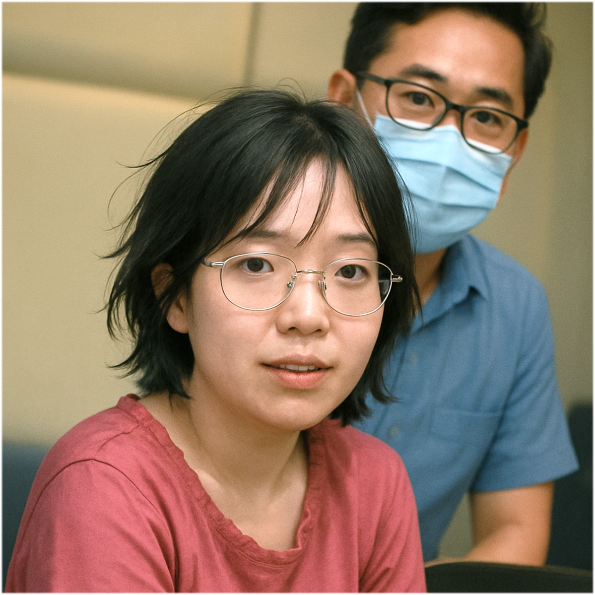

Illustration

Gender
♀️ - 女生
Goal
以「電機系系花」的身份讓♂帶你一起畢業
Ability
# 醫生說不是亞斯 -
在你的回合從牌庫翻出一張牌，其顏色決定你的行為，難怪旁人總是看不懂。
# 凸凸的可以摸嗎？ -
被你聆聽書報討論的♂，你一摸就知道他的研究題目。
# 電機系系花 -
傳出的論文可以指定一位♂發表。
# Lab 怎麼有流浪漢！？ -
向 Lab 最多三位研究生各索取一張手牌。
Trivia
「醫生說不是亞斯」故事源於一次色彩學大師與慈慈的對話。慈慈時常做出一些讓旁人摸不著頭緒的行為，連她自己也察覺到好像「有點不太一樣」。於是，她主動去看了醫生，希望找出原因。然而，醫生們的診斷結果都一致 － 這不是亞斯伯格症。
「凸凸的可以摸嗎？」 這個經典名場面，據說是湖口砲兵連連長親耳所聞，地點發生在某次課間下課的教室裡。當時，慈慈與余十三坐在連長正後方，聲音清晰到彷彿就在耳邊呢喃。
慈慈忽然湊近余十三，帶著一臉認真地問：「你這邊怎麼凸凸的？」
余十三一愣，摸了摸脖子，淡定回應：「那個是喉結啦。」
慈慈點了點頭，思索一秒，隨即發問：「可以摸嗎？」
余十三瞬間語塞，臉上寫滿羞澀，只擠出一句：「這樣很奇怪耶…」
就這樣，這段驚天動地的對話成了連上茶餘飯後的傳奇話題，被永久寫入慈語錄第一章。
「電機系系花」這個稱號的由來，要追溯到色彩學大師第一次見到慈慈的那一天。
當時，大師一眼望去，驚鴻一瞥之後內心直呼：「咦？原來她是AIoT Lab的學生啊？我怎麼以前都沒看過她？」
接著他若有所思地補了一句 —
「沒想到…電機系竟然會有這麼漂亮的女生？她該不會是電機系系花吧？」
於是系花這個稱號便不脛而走，流傳至今。
「Lab 怎麼有流浪漢！？」這句話的誕生，來自陳大帥帥初次見到慈慈時的驚呼。
那天，慈慈穿著一貫的前衛風格現身實驗室，造型自由奔放、毫無拘束，帥帥一轉頭看到，瞬間眉頭一皺、語出驚人：
「Lab 怎麼有流浪漢！？」、「她怎麼進來的？」
沒想到這番評語迅速在實驗室內部傳開，一傳十、十傳百，不知怎麼地也飄進了色彩學大師的耳朵裡，才有了後續更加曲折離奇的故事…
#AIoT #Master #Year110
Relationship
余十三 - 曖昧對象